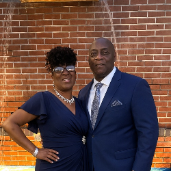

Since 2004, Pastor T has been serving at New Grace MBC with a passion for making the Gospel accessible to everyone—regardless of race, culture, or economic background.
By profession, Pastor T is an educational leader with Birmingham City Schools, but his true calling is "Adding to the Body of Christ" (ABC). As both a pastor and educator, he is dedicated to teaching God’s Word in a way that transforms lives—helping people apply Scripture to their daily walk, deepen their relationship with God, and grow in love for one another.
Alongside him, First Lady, Dr. Vie, serves as an educator for elementary and middle school students. She has a deep love for children and is passionate about nurturing their growth—both academically and spiritually. With a heart for young minds, she encourages them to embrace faith, build character, and develop a strong foundation in Christ.
Together, Pastor T and First Lady are dedicated to building a church family where faith, love, and service are at the core. They believe that faith isn’t just something we hear on Sundays—it’s meant to be lived daily in our homes, schools, and communities.

At New Grace MBC, Minister Shelia Penn serves as our dedicated Associate Pastor, bringing both spiritual wisdom and a compassionate heart to the ministry. With over 25 years as a healthcare professional, she understands the importance of healing—both physically and spiritually.
A powerful prayer warrior, Minister Penn believes in the transformative power of prayer and stands in faith for individuals, families, and the entire community. Her passion for families, youth, the elderly, and community outreach drives her mission to serve, uplift, and inspire others to grow in their walk with Christ.
With a deep commitment to faith, healing, and service, Minister Penn plays a vital role in fostering a church culture where everyone feels seen, supported, and encouraged. Whether through prayer, mentorship, or community engagement, she is dedicated to helping people experience God’s love in a real and personal way.
Rev. Ronald Worsham serves as Assistant Pastor at New Grace MBC, bringing a steadfast commitment to the proclamation of God's Word and pastoral care. His heart for ministry and dedication to building up the body of Christ strengthen our leadership team and congregation.
Grounded in Scripture and focused on discipleship, Rev. Worsham is dedicated to encouraging believers in their spiritual walk, supporting church growth, and serving the community with humility and grace.